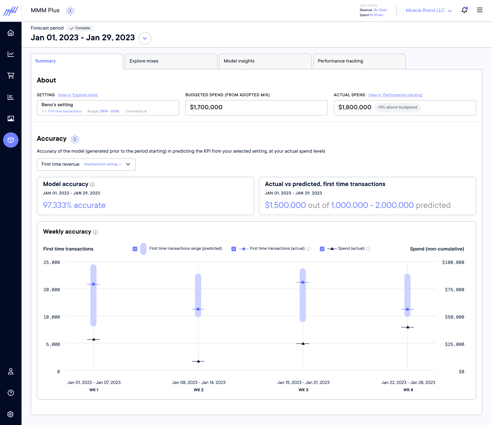
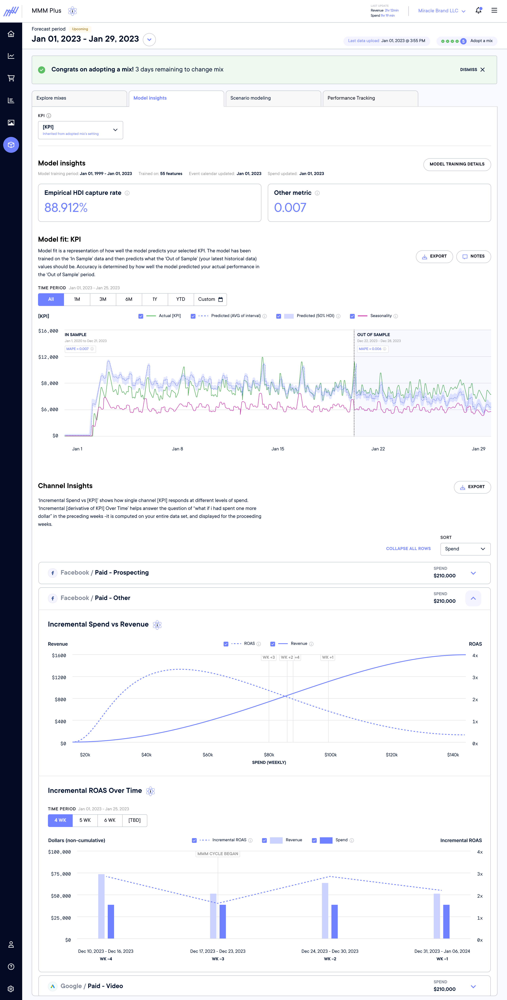
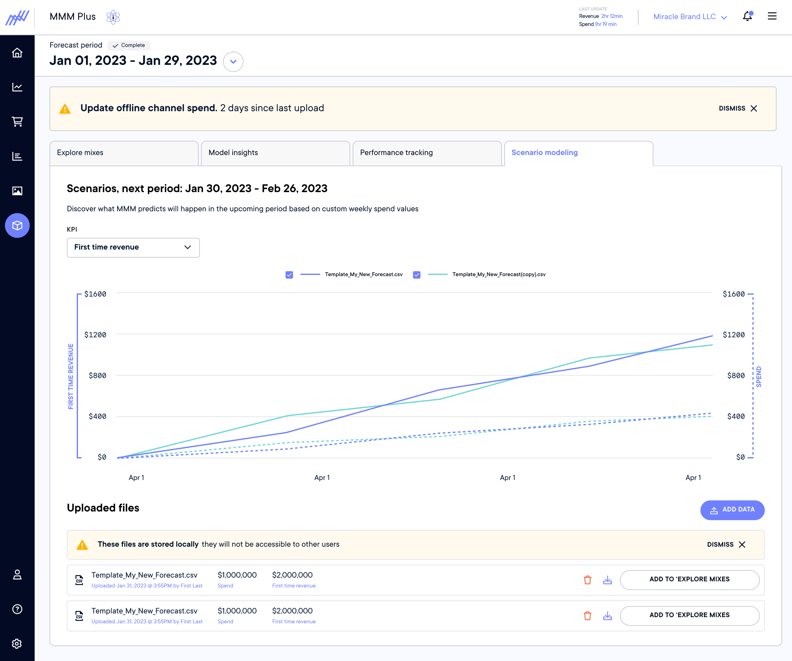
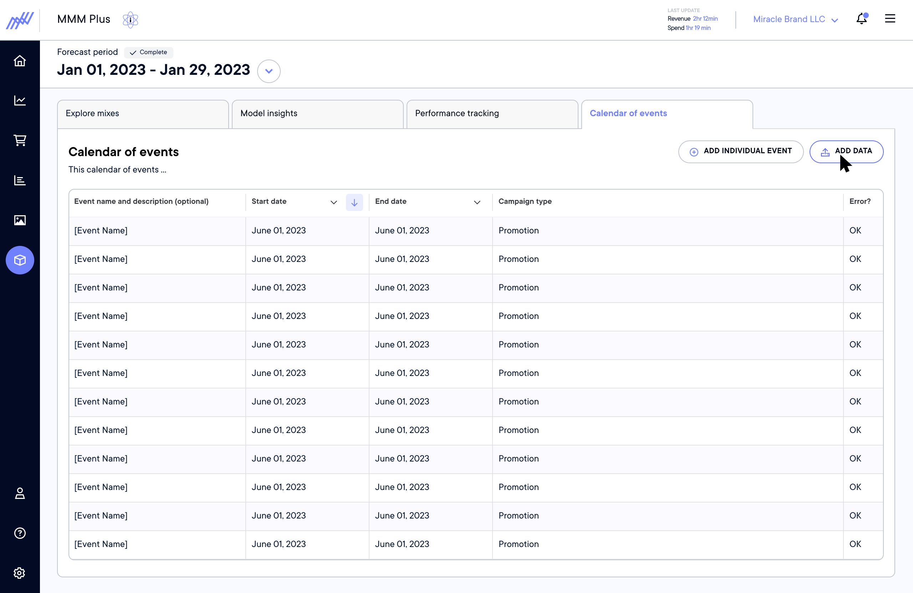
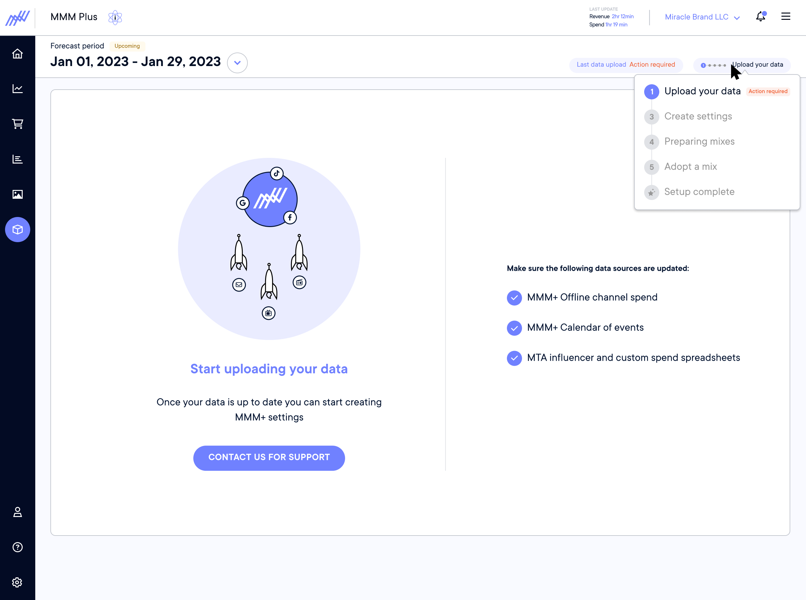
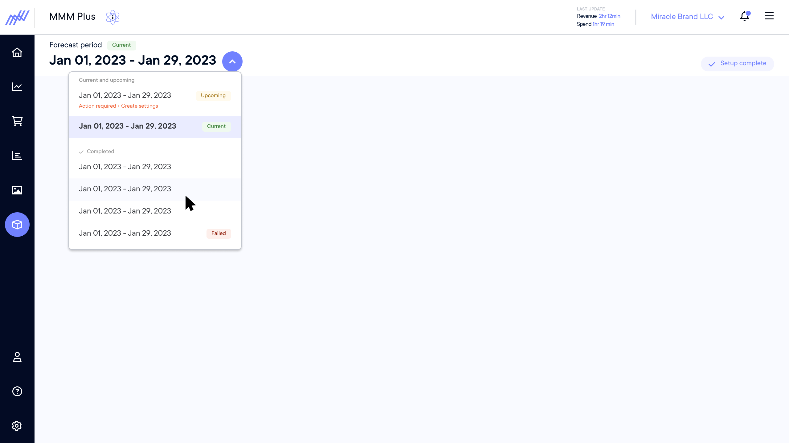

Northbeam's data science team had already been delivering a managed MMM service to top-tier customers — but it required hands-on involvement to run and interpret. The goal was to productize that capability: take what our data scientists were doing manually and build it into a self-serve product that any customer could use, regardless of their technical background.
As the lead designer on MMM+, I was responsible for owning the user experience of the product. I collaborated with Product to define requirements and Engineering for implementation.
- Productized a managed service — Converted a hands-on data science offering into a self-serve product, reducing ongoing workload on the CS and DS teams
- Expanded TAM — Moved Northbeam into the media mix modeling space, opening a new category of revenue beyond MTA
- New customer acquisition — MMM+ became a differentiator in sales, bringing in customers who came specifically for the modeling capability
- Upsell to existing customers — Gave the sales team a clear path to expand revenue within the existing customer base
- Customer Interviews — Spoke with media buyers, brand owners, and marketing directors to understand how they currently made media mix and budget decisions, what data they trusted, and where existing tools broke down. The clearest signal: non-technical users trusted the data but distrusted their own ability to interpret it correctly.
- Data Science Collaboration — Worked closely with Northbeam's internal data science team to understand what the model actually produced.
- Concept Testing with Brand Owners — Before committing to a direction, I ran concept tests with brand owners — the least technical segment and the one most likely to be intimidated by a modeling tool. Early versions of MMM+ relied heavily on the Data Science and Customer Success teams to interpret results for the customer. Feedback pushed us toward reducing choice and providing recommended actions with the optional ability to manually make changes.
MMM+ has an inherently time-based user experience — which created a significant design problem. While monitoring performance for the current period, the customer has to be actively planning for the upcoming period. A large part of the design work was breaking this sequence into stages that felt like natural progress rather than prerequisite gates — communicating what was happening, why each step mattered, and what the user would get on the other side.
If the customer has not purchased MMM+ there is a dedicated page explaining the value proposition and a clear path to upgrade.

After MMM+ has been purchased there is some configuration work that the Data Science team must perform. While the customer waits for the first cycle to start we provide additional learning materials on MMM+.

If the customer leverages external data sources they must provide them each week to get the most accurate media mix. The more data inputs, the better the model performance.

Returning customers can carry forward settings from a previous cycle, reducing friction for repeat use. New users start from scratch selecting their budget and KPIs.

While the model is running the customer is in a waiting state — the design maintains engagement, communicates progress, and sets expectations for when results will be ready.

The model returns media mix scenarios for review. The user compares mixes and chooses one for the upcoming cycle.

The cycle is live. The user monitors spend pacing and tracks predicted performance against actuals for the mix.

A weekly breakdown of predicted vs. actual KPI and spend. Spend is expected to be flat week over week — deviations signal where over or under spending may be impacting the KPI.

Shows how accurately the model predicted performance by channel — giving users confidence in the model's outputs and surfacing where it's strongest.

An advanced feature that lets users run custom media mix scenarios against the model via CSV upload — useful for testing hypothetical budget allocations before committing.

A place to input the marketing event schedule — discounts, sales, holidays, and other promotional moments. This is an additional data input used by the model to improve accuracy.

Helps orient the user within the cycle — communicating where they are, what still needs to be done, and what to expect next.

Enables switching between MMM cycles — current, upcoming, and completed — so users can review past performance or plan ahead without losing context.
